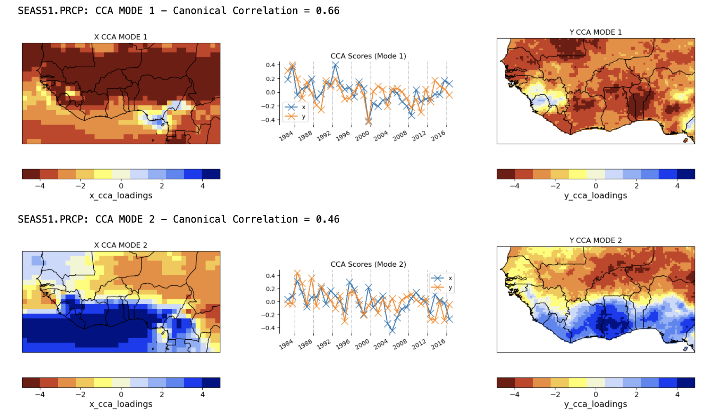

Running PyCPT 2.5#
1. Run the CPT analysis and plot the skill for multiple GCMs#
The next cells in the Jupyter Notebook will download the predictor and predictand datasets and then execute CPT for each GCM, here namely for the CFSv2 and SEAS5 models. The next step is to plot and assess the cross-validated deterministic skill scores for each GCM. Note that these are deterministic skill scores because the regression model is deterministic, and our goal is selection of the most appropriate model.
The available deterministic metrics are
skill_metrics = ['pearson', 'spearman', 'two_alternative_forced_choice', 'roc_area_under_curve', 'roc_area_above_curve']
{kind=link}
The Pearson and Spearman correlation maps show the degree of association between the cross-validated predictions of Jun-Sep precipitation over the hindcast period, and the CHIRPS data. Both coefficients should be positive over most of the map for the predictions to be meaningful. The SEAS5 meets this criterion while CFSv2 does not.
The 2AFC and ROC scores assess how well categorical deterministic hindcasts are able to discriminate between the observed tercile categories. The ROC areas need to exceed 0.5 to beat climatology, and the 2AFC to exceed 50%. The maps of these discrimination scores largely agree with the correlations, indicating that the CFSv2 has little skill. We recommend that you assess the skills of other available models, in order to build the best multi-model ensemble for a particular region.
Tip
Setting interactive = False prior to performing the CPT analysis enables the CPT Goodness Index to be accessed when CPT runs, as well as other run-time messages issued by CPT.
Why aren’t probabilistic skill scores plotted in PyCPT 2.5?
CPT requires the so-called retroactive forecasting method to be used to calculate probabilistic skill scores. The the NMME and C3S hindcast datasets are too short for this to be viable. It is, however, implemented in the subseasonal version of PyCPT 2.5.
2. Plot the EOFs of the predictor and predictand fields#
The CCA and PCR models constructed by CPT both use a Principal Component (PC) analysis of the GCM predictor field to reduce its dimension to a few independent components. CCA also uses a PC analysis of the observed predictand field.
The PC timeseries and EOF spatial loadings are plotted, with the predictor EOFs on the left and the predictand EOFs (only for CCA) on the right. The EOF maps show the spatial patterns that dominate (in variance) the seasonal variability (from year to year) in the observations and each GCM. The patterns of the first three EOFs of the SEAS5 model precipitation are quite similar to their UCSB observed counterparts, lending credence to the SEAS5 model.
The variance fractions explained by the EOF modes are given (in %) above each EOF map. Note that the variances of the the two leading modes of the SEAS5 model are much larger than their observed counterparts. Several factors may account for this, including (a) the model’s ensemble mean is used (X), and (b) the observed CHIRPS field (Y) has high spatial resolution than the model, both of which will increase the signal to noise of the X compared to Y.
{kind=link}
Attention
The EOF patterns are geometrically constrained to be statistically independent, and to maximize varaince, both of which prevents an entirely physical interpretation. Thus, the first EOF is largely of one sign everywhere with the 2nd and 3rd modes representing north-south and east-west dipoles.
3. Plot the CCA modes#
The CCA modes are easier to interpret physically, than the EOFs, because they are not geometrically constrained or maximize variance. Rather, they are defined by the linear combinations of the EOF timeseries that are maximally correlated. The figure below shows the two CCA modes of the SEAS5 and CHIRPS. CCA confirms that the patterns of unimodal variability and north-south rainfall-anomaly contrasts seen in EOFs 1 and 2 are indeed physical. These patterns are fairly closely matched between the hindcasts and observations, but their time variations are far from perfectly correlated (about 0.66 for mode 1 and 0.46 for mode 2); these imperfect correlations reflect the errors in the GCM hindcasts, but nonetheless indicate substantial seasonal rainfall predictability across the domain.
{kind=link}
In summary, the maps and timeseries of the EOF and CCA modes help to visualize the CPT regression model, and provide important information for model selection. In the case of CCA, physically-interpretable co-variability between predictor and predictand fields is essential. For PCR, a physical interpretation of the predictor EOFs should also be attempted.
Some math
CCA diagonalizes the regression matrix \(\widetilde{\widetilde{A}}\) by transforming the predictor and predictand vectors \(\widetilde{Y} = \widetilde{\widetilde{A}} \widetilde{X}\), such that the leading diagonal elements of \(\widetilde{\widetilde{A}}\) become the canonical correlation coefficients \(\rho(k)\) where \(k\) denotes the mode number.
The gridpoint forecast value of the predictand \(Y^f(x,y)\) is given by the inner product of the GCM prediction field \(\widetilde{X}^f\) with the X CCA modes \(\widetilde{U}_k\) , times the canonical correlation, times the local value of the Y CCA mode \(V_k(x,y),\) summed over all the CCA modes that are retained by CPT:
In other words, to get the forecast value at any point, we first project the GCM’s forecast field onto the X CCA mode, and then multiply this scalar value by both the canonical correlation value and by the local amplitude of the CCA Y mode. A strong projection and large canonical correlation coefficient, together with a large local amplitude of the CCA Y mode are all required for the local forecast anomaly to be large. If any of these are small, the contribution of this CCA mode to the forecast will be small.
How many EOFs and CCA modes?
CCA truncates the number of EOFs and CCA modes by cycling through all possible combinatioms of X, Y, and CCA truncations, calculating the cross-validated Goodness index (which measures the model validity averaged spatially across the predictand domain).
Advantages of CCA
capitalizes on the larger spatial scales of seasonal climate predictability (which result from the oceans’ role in providing the main “sources” of prediction skill on seasonal time scales) by identifying “patterns” of predictable precipitation/temperature
by identifying predictable spatial patterns in the observations, it is robust to local-scale observational error (noise) allows physical interoperation of the regression between GCM predictions and in-country climate variability
produces forecasts that vary smoothly are are consistent from grid point to grid point
Advantages of PCR
Does not truncate the predictand, enabling more variance of the predictand to be potentially predicted
4. Plot the calibrated forecasts from the individual models#
The next cell of the Notebook, prior to the construction of the multi-model ensemble, allows the forecasts from the individual models to be plotted from the forecast initial date given by fdate — in both tercile probability and deterministic formats.
These are plotted below for the SEAS5 CCA-calibrated Jun-Sep 2022 precipitation, initialized on May 1, 2023. The top map shows the probability of the dominant tercile. The second map shows the deterministic forecast, expressed here as an anomaly; this is controlled by the tailoring option in cpt_args:
'tailoring': 'Anomaly', # tailoring None, 'Anomaly'
The precipitation anomaly is expressed in the units of the predictand (mm). The calibrated SEAS5 forecast is toward wet in the north and dry in the south.
{kind=link}
Note
The climatological period in PyCPT 2 is always set to the length of the training period. In this csase 1982-2016.
Tip
To provide an uncalibrated forecast baseline, our calibrated forecasts can be compared with the global forecast anomaly maps of the NMME models, noting that these are for 3-month averages: https://www.cpc.ncep.noaa.gov/products/NMME/archive/
Similar maps are available for the C3S suite of models can be found here: https://climate.copernicus.eu/charts/c3s_seasonal/